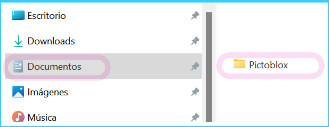

Guardando tus programas
Una vez instalado, Pictoblox crea una carpeta con el mismo nombre dentro de la carpeta Documentos

Dentro de la carpeta de Pictoblox se guardan por defecto los programas creados. Si creamos un nuevo programa (por ej. Tobi camina) al salvarlo se irá a guardar a dicha carpeta, si no se indica otra ruta.